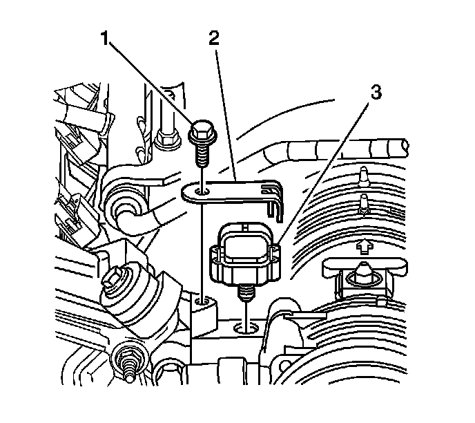

Manifold Pressure/Vacuum Sensor: Service and Repair
Manifold Absolute Pressure Sensor Replacement
Removal Procedure

1. Turn the ignition OFF.
2. Remove the fuel injector sight shield. Refer to Fuel Injector Sight Shield Replacement (Service and Repair) .
3. Disconnect the manifold absolute pressure (MAP) sensor electrical connector.

4. Remove the bolt (1) and bracket (2) from the MAP sensor (3).
5. Remove the MAP sensor (3).
6. Inspect the MAP sensor seal for wear or damage. If a problem is found, replace as necessary.
Installation Procedure
1. Install the MAP sensor (3).
Notice: Refer to Fastener Notice (Fastener Notice) .
2. Install the bracket (2) and bolt (1).
Tighten the bracket bolt to 12 N.m (106 lb in).
3. Connect the MAP sensor electrical connector.
4. Install the fuel injector sight shield. Refer to Fuel Injector Sight Shield Replacement (Service and Repair) .